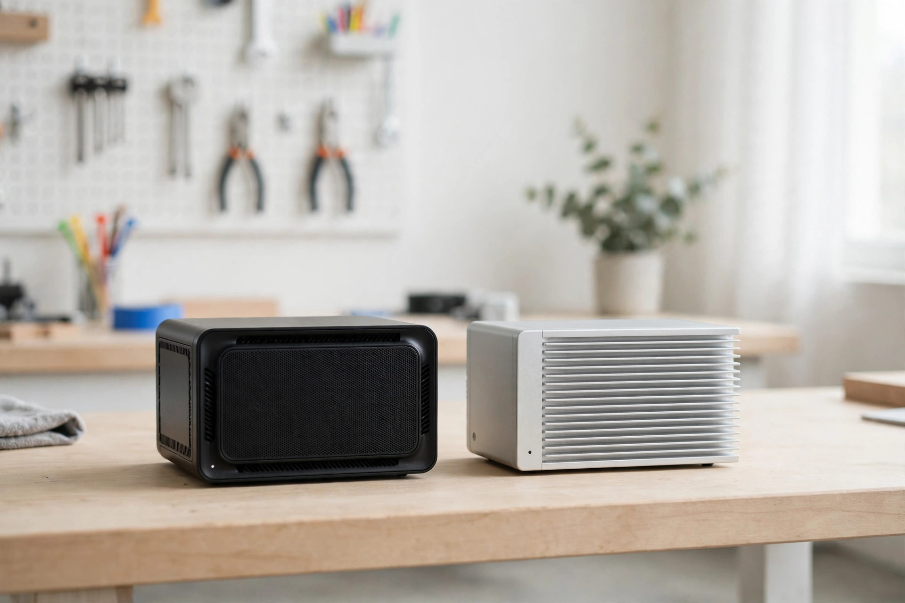

AWS vs DigitalOcean for Small Business: The Bandwidth-Overage Trap
Last updated

At entry level, AWS and DigitalOcean look interchangeable: $4-ish a month for a small virtual server with about a terabyte of transfer. The sticker prices are nearly identical — and nearly irrelevant. The bill that surprises small businesses isn't the server, it's the bandwidth overage: DigitalOcean charges $0.01 per GB over your allowance, AWS Lightsail charges $0.09. That's a 9x difference hiding behind a $1.50 price gap. This guide prices the trap, the growth trap, and the all-in bill.
The published entry prices, side by side
| Provider | Entry price | Entry specs | Included transfer | Overage rate |
|---|---|---|---|---|
| DigitalOcean (Basic Droplet) | $4/mo | 512 MiB RAM, 1 vCPU, NVMe SSD | ~1 TB (pooled across account) | $0.01/GB |
| AWS Lightsail (Linux) | $3.50–$5/mo | 0.5–1 GB RAM, 2 vCPU (on $5 tier) | ~1 TB | $0.09/GB |
Prices checked 2026-10-11 against 2026 published comparisons; overage rates from AWS's official Lightsail data-transfer documentation (Canada Central: $0.09/GB) and independent VPS bandwidth comparisons. Two structural notes: DigitalOcean's transfer pools across your whole account (one busy droplet can borrow another's unused allowance), and since January 2026 DigitalOcean bills per second with a 60-second minimum — staging environments and batch jobs cost cents instead of a month. Lightsail's IPv6-only bundles drop to $3.50; Windows bundles run roughly double the Linux price.
The bandwidth-overage trap, priced
Say a product launch, a viral post, or a misconfigured backup pushes you to 3 TB of outbound transfer in a month — 2 TB over the included 1 TB. That's 2,048 GB over:
| Provider | Server | 2 TB overage | Month total |
|---|---|---|---|
| DigitalOcean ($4 droplet) | $4.00 | $20.48 | $24.48 |
| AWS Lightsail ($5 bundle) | $5.00 | $184.32 | $189.32 |
One heavy month costs $164 more on Lightsail — the overage alone is 37x the server price. This is the trap: both providers sell you the same $4–$5 server, but the meter runs 9x faster on one of them. If your workload is "a server with traffic I don't want to think about," the overage rate matters more than the sticker price. (In CAD at the 2026-10-11 mid-market rate: roughly $35 vs $270 for that month.)
Lightsail is not AWS (the growth trap)
The second trap is architectural. Lightsail is a fixed-price bundle inside AWS — simple, predictable, with training wheels. Real AWS (EC2, RDS, load balancers) is metered per component with no free egress. The growth path that burns small businesses: you outgrow Lightsail's bundles, migrate "up" into EC2 for flexibility, and the bill stops being predictable — a load balancer here, a managed database there, data egress everywhere.
The rule: choose Lightsail if the server will later talk to S3, CloudFront, or Route 53 — the AWS ecosystem integration is its real advantage. Choose DigitalOcean if you want the server to stay a server: predictable pricing, pooled bandwidth, and a scaling path (resize droplets, add managed databases, or use App Platform) that doesn't require learning IAM to read the invoice.
The all-in bill with the extras layer
The number that surprises most founders isn't the server — it's the hidden extras. Price them before you commit:
- Backups: DigitalOcean backups add 20% to the droplet price ($0.80/month on a $4 droplet).
- Managed database: the moment you outgrow the database on your droplet, both providers sell you one — budget a separate monthly charge when that day comes.
- Load balancer: a separate monthly charge on either provider the day you need high availability — another step-up in the bill.
- Engineer time: "a cheap server that costs your team a day a month in maintenance isn't cheap." Unmanaged VPS means you own security patches, updates, and 2 a.m. outages.
A realistic small-production setup — a $12–$24/month droplet size, backups, monitoring — runs $15–$30/month before labor on either provider in a quiet month. The difference between them only shows up in the loud months, and that's exactly when the $0.01 vs $0.09 overage gap decides the bill.
A note on format: this is a buying-decision guide, not a fix-it walkthrough, so there are no numbered setup steps — the overage comparison above is the actionable part.
FAQ
Is DigitalOcean cheaper than AWS for a small business?
At entry level the sticker prices are nearly identical ($4 vs $3.50–$5/month). DigitalOcean wins decisively on bandwidth overages: $0.01/GB versus Lightsail's $0.09/GB — a 9x difference that dominates the bill in any high-traffic month.
What is the difference between AWS Lightsail and EC2?
Lightsail is AWS's fixed-price VPS bundle ($3.50–$5/month entry) with included transfer. EC2 is metered AWS proper — no free egress, per-component billing. Outgrowing Lightsail into EC2 is the classic cost trap: the bill stops being predictable.
How much does a small business VPS really cost per month?
The server is $4–$5/month, but the all-in bill adds backups (~20% on DigitalOcean), a managed database, monitoring, and engineer time. A realistic small-production setup runs $12–$24/month before labor.
This guide is general business information, not financial advice. Prices checked 2026-10-11 — always confirm current pricing on each provider's own site before buying.